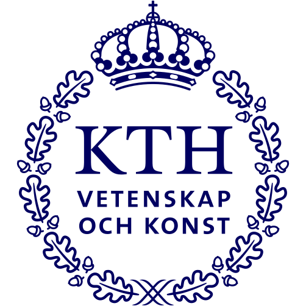

Clemson University
Ph.D. in Industrial Engineering
Jan 2026 – Present
01 / ABOUT
“All men by nature desire to know.”
STATISTICS, MACHINE LEARNING & FORECASTING
Hello, I’m Si-Tong YANG, a PhD student in the Department of Industrial Engineering at Clemson University, advised by Prof. Feng Ye and a member of the AIRE Lab.
My research brings together statistics, physics, and AI to understand and predict evolving environmental systems, from terrestrial weather to space weather. I am particularly interested in statistical deep learning, flow matching for forecasting, and data-driven approaches to data assimilation, as well as how physical knowledge can guide these methods.
Across these directions, I am interested in the connections between the atmosphere, ionosphere, and thermosphere, and how models can account for their interactions when estimating current states and predicting what comes next.
Statistical deep learning · Flow matching · Data assimilation · Physics-guided machine learning · Terrestrial & space weather
BACKGROUND
Ph.D. in Industrial Engineering
Jan 2026 – Present

M.Sc. in Computer Science
Aug 2023 – Oct 2025
M.Sc. in Internet of Things
Sep 2024 – Oct 2025

B.S. in Industrial Engineering
Aug 2019 – Jul 2023